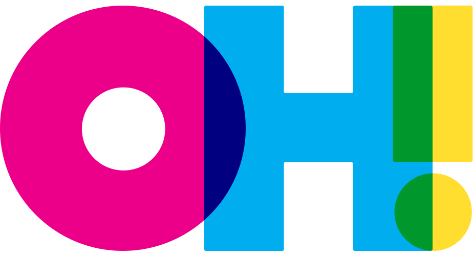

Organ House was a Bay Area community devoted to normalizing non-monogamy and sexual exploration. We organized public & private events for the growing non-monogamous community from 2014 to March of 2020. We are proud of fostering a strong culture of consent that made headlines. We canceled all in-person events indefinitely on March 7 of 2020, due to the Coronavirus pandemic.